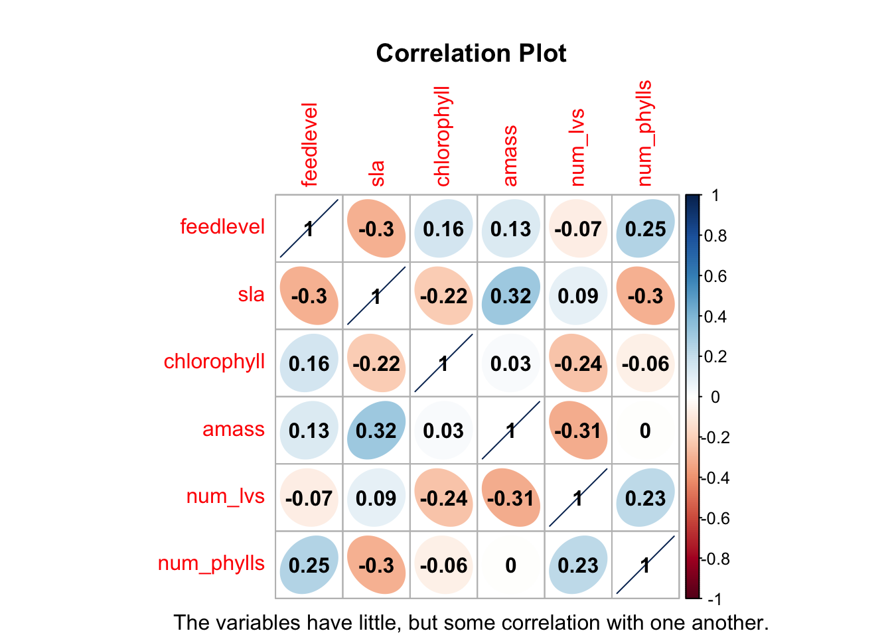
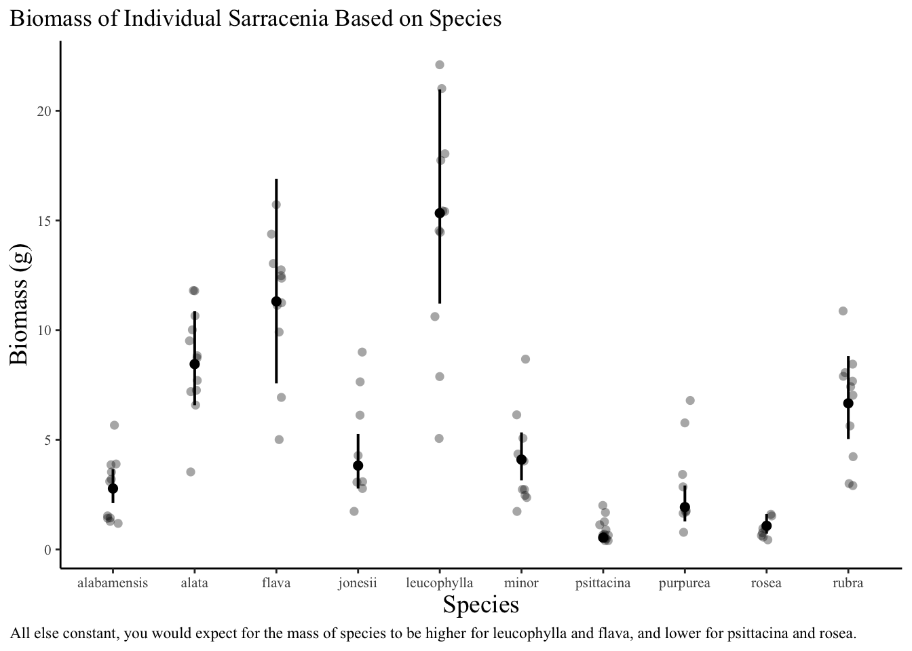

Code
library(tidyverse)
library(here)
library(janitor)
library(ggeffects)
library(performance)
library(naniar)
library(flextable)
library(car)
library(broom)
library(dplyr)
library(corrplot)
library(AICcmodavg)
library(GGally)Plants are important to the Earth and its environment due to their role in global ecosystems. Sarracenia, a genus of plant species, consist of carnivorous pitcher plants. The pitchers of Sarracenia hold 'phytotelmata' or 'plant-held waters' and trap prey, which are then digested and absorbed by the plant as a strategy for obtaining necessary nutrients (Heil et al., 2022). Many might care about these plants due to their benefits for other species, including humans. For example, pitcher plants can be considered foundation species that provide habitat for entire communities of specialists who completely rely on pitcher plants for their existence (Jennings & Rohr, 2011). Additionally, humans benefit from this plant because its leaf extract serves as. a treatment for diabetes symptoms and complications (Harris et al,, 2012). It could be useful and/or important to predict individual biomass from morphological, physiological, or taxonomic characteristics because it could show a relationship between such characteristics and biomass that could tell us more about the plant in regards to its photosynthetic properties as most plant mass comes from leftover carbon from respiration. The questions that I am trying to answer are how Sarracenia characteristics predict biomass and which characteristics best predict it. The hypothesis being tested is that several physiological characteristics work together to influence biomass in Sarracenia.
library(tidyverse)
library(here)
library(janitor)
library(ggeffects)
library(performance)
library(naniar)
library(flextable)
library(car)
library(broom)
library(dplyr)
library(corrplot)
library(AICcmodavg)
library(GGally)plant <- read_csv(here("data", "knb-lter-hfr", "hf109-01-sarracenia.csv")) %>%
# to make column names cleaner
clean_names() %>%
# selecting columns of interest
select(totmass, species, feedlevel, sla, chlorophyll, amass, num_lvs, num_phylls)The sampling methods involved two plants of each Sarracenia species being assigned to one of six feeding levels. These feeding levels ranged from 0 - 0.25g of finely ground wasps per feeding (for small species), 0 - 0.5g (for species of intermediate sizes), and 0 - 1.0g (for large species). There were a total of 120 plants that were fed once a week for seven weeks (Ellison & Farmsworth, 2021). The data was organized by cleaning column names as well as selecting 8 columns of interest: totmass (biomass), species, feed level, sla (specific leaf area), chlorophyll, amass, num_lvs (total number of pitchers and phyllodes produced by each plant), and num_phylls (the number of phyllodes produced by each plant).
missing.values <- plant %>% # create new object based on missing values
gather(key = "key", value = "val") %>%
mutate(is.missing = is.na(val)) %>%
group_by(key, is.missing) %>%
summarise(num.missing = n()) %>%
filter(is.missing==T) %>%
select(-is.missing) %>%
arrange(desc(num.missing))
missing.values %>%
ggplot() + # make visualization
geom_bar(aes(x=key, y=num.missing), stat = 'identity') +
labs(x='variable', y="number of missing values", title='Missing Data in Plant Dataset', caption = "There is no missing data for total mass, species, and feed level.
There is missing data for everything else, and a significant amount
in chlorophyll, photosynthetic rate (amass) and leaf area.") +
theme_classic()plant_subset <- plant %>%
drop_na(chlorophyll, amass, sla, num_lvs, num_phylls) # get rid of NA valuesThere is no missing data for the predictor variables species and feed level. There are a few missing observations in the total number of pitchers and phyllodes produced by each plant (num_lvs) as well as the number of phyllodes produced by each plant (num_phylls), and a considerable amount in the photosynthetic rate (amass), chlorophyll, and leaf area predictors.
# calculate Pearson's r for numerical values only
plant_cor <- plant_subset %>%
select(feedlevel:num_phylls) %>%
# diagonal is each variable compared to itself
cor(method = "pearson")
# creating a correlation plot
corrplot(plant_cor,
# change shape of what's in the cells
method = "ellipse",
addCoef.col = "black",
mar=c(1,1,3,1))
title(main = "Correlation Plot",
sub = "The variables have little, but some correlation with one another.")
plant_pairs <- plant_subset %>%
select(species:num_phylls)
ggpairs(plant_pairs) + # creates pairs plot
labs(title = "Relationships Between Variables", caption = "There us some sort of relationship that all the variables have with each other.")The Pearson correlation was used to measure the strength of the linear relationship between the variables. It has a value between -1 to 1, with a value of -1 meaning a total negative linear correlation, 0 being no correlation, and 1 meaning a total positive correlation. None of the variables got close to a total linear correlation, and some variables showed no correlation with one another. Based on the pairs plot, the majority of variables share some sort of negative relationship with each other in the cases where some sort of relationship exists.
null <- lm(totmass ~ 1, data = plant_subset) # used for comparison
full <- lm(totmass ~ species + feedlevel + sla + chlorophyll + amass + num_lvs + num_phylls, data = plant_subset) # has all other columns as predictorspar(mfrow = c(2,2))
plot(full) # visually checks assumptions
check_normality(full)
check_heteroscedasticity(full) # runs assumption checks; assumptions not met; eval FALSE to not show warningsfull_log <- lm(log(totmass) ~ species + feedlevel + sla + chlorophyll + amass + num_lvs + num_phylls, data = plant_subset) # hypotheses are about log(total) make sure to back transform from log to actual scale of biomass for results. all the estimates for slope = log scale, exponentiate whatever slope is
par(mfrow = c(2,2))
plot(full_log)
check_normality(full_log)OK: residuals appear as normally distributed (p = 0.107).check_heteroscedasticity(full_log) OK: Error variance appears to be homoscedastic (p = 0.071).null_log <- lm(log(totmass) ~ 1, data = plant_subset) # assumptions met after log transformationIn order to determine how species and physiological characteristics predict biomass, we fit multiple linear models. To start, we created a full model with all columns of interest, as well as a null model that is used as a means of comparison. We visually assessed normality and homoscedasticity of residuals using diagnostic plots for the full model. We also tested for normality using the Shapiro-Wilk test (null = variable of interest (residuals) are normally distributed) and homoscedasticity using the Breusch-Pagan test (null = residuals have constant variance). Based on the assessments, the assumptions of linear regression are not met. As a result, we needed to do a natural log transform of the full model in order to meet the assumptions of linear regression. All of the interpretation will be based on the transform response (natural log transform). We then evaluated multicolinearity by calculating the generalized variance inflation factor and determined that none of the variables in the full model are inflating the R^2 value as they all fall below 5, the number that generally draws inflation concerns.
car::vif(full_log) # variable is inflating r^2 if >5; none of them inflate r^2 in this case GVIF Df GVIF^(1/(2*Df))
species 42.351675 9 1.231351
feedlevel 1.621993 1 1.273575
sla 1.999989 1 1.414210
chlorophyll 1.949828 1 1.396362
amass 2.872084 1 1.694722
num_lvs 2.813855 1 1.677455
num_phylls 2.995510 1 1.730754model2_log <- lm(log(totmass) ~ species, data = plant_subset)
# check assumptions for model 2
par(mfrow = c(2,2))
plot(model2_log)
check_normality(model2_log)OK: residuals appear as normally distributed (p = 0.374).check_heteroscedasticity(model2_log) # assumptions metOK: Error variance appears to be homoscedastic (p = 0.100).model3 <- lm(totmass ~ feedlevel, data = plant_subset)
# check assumptions for model 3
par(mfrow = c(2,2))
plot(model3)
check_normality(model3)
check_heteroscedasticity(model3) # assumptions not met; eval FALSE to not show warningsfcs_log <- lm(log(totmass) ~ feedlevel + species + chlorophyll, data = plant_subset)
par(mfrow = c(2,2))
plot(fcs_log) # check assumptions
check_normality(fcs_log)OK: residuals appear as normally distributed (p = 0.139).check_heteroscedasticity(fcs_log)OK: Error variance appears to be homoscedastic (p = 0.378).MuMIn::AICc(full_log, model3, model2_log, fcs_log, null_log) # compared models to each other df AICc
full_log 17 133.9424
model3 3 613.8330
model2_log 11 157.5751
fcs_log 13 146.4839
null_log 2 306.0028One additional model I used consisted of species as the predictor variable. The assumptions of linear regression were not met for this model, but were after a natural log transformation. I chose this predictor variable because different species have different ways of life, and therefore could have different masses. Another model that I used had feed level as the predictor variable. Although the assumptions are not met for this model nor its log transformation, I chose this predictor variable anyway because I think the amount of feed the plant consumes should have some influence on its biomass. The more it eats, the higher the mass, and vice versa. Additionally, I used another model with chlorophyll, feed level, and species as predictor variables. At first, it didn’t meet the assumptions, but did after a log transformation. I chose to put these variables together because chlorophyll has some correlation with feed level. If a plant doesn’t get enough nutrients, chlorophyll levels will be lower. Additionally, the amount of nutrients a plant needs could be depend on the species. After running the assumption checks, I ran a model comparison using the Akaike’s Information Criterion (AIC). This looks for the simplest model that explains the most variance. The model with the smallest value is considered the best model out of the ones in the comparison.
model_pred <- ggpredict(full_log, term = "species", back.transform = TRUE) # ignore standard error part; back transform to communicate results on scale of original variable.
model_pred# Predicted values of totmass
species | Predicted | 95% CI
---------------------------------------
alabamensis | 2.78 | [2.11, 3.65]
alata | 8.45 | [6.58, 10.86]
flava | 11.31 | [7.57, 16.89]
jonesii | 3.82 | [2.78, 5.26]
minor | 4.10 | [3.15, 5.33]
psittacina | 0.54 | [0.37, 0.77]
purpurea | 1.93 | [1.28, 2.91]
rubra | 6.66 | [5.03, 8.82]
Adjusted for:
* feedlevel = 0.18
* sla = 129.27
* chlorophyll = 471.29
* amass = 35.26
* num_lvs = 7.08
* num_phylls = 0.58plot(model_pred, add.data = TRUE) + # make visualization of biomass and 1 predictor
labs(title = "Biomass of Individual Sarracenia Based on Species", x = "Species", y =
"Biomass (g)", caption = "All else constant, you would expect for the mass of species to be higher for leucophylla and flava, and lower for psittacina and rosea.") +
theme_classic() + # finalize plot
theme(legend.position = "none",
text = element_text(family = "Times New Roman"),
axis.title = element_text(size = 14),
axis.text = element_text(size = 8),
plot.caption = element_text(hjust = 0),
plot.caption.position = "plot",
plot.title.position = "plot")
summary(full_log, back.transform = TRUE) # used to get summary described in results (see parentheses)We found that the full model including the species, feed level, leaf area, chlorophyll, photosynthetic rate (amass), total number of pitchers and phyllodes produced by each plant (num_lvs), and number of phyllodes produced by each plant (num_phylls) predictors best predicted biomass in Sarracenia (F(15,87) = 38.38, p < 0.001, alpha = 0.05). The best model was chosen by doing a model comparison with three other models using the Akaike’s Information Criterion (AIC) and chose the model with the lowest value. The original model did not meet assumptions of linear regression, but did after a log transformation. In a biological sense, this means that there are many predictors that influence biomass, possibly more than the ones incorporated into this model. In the case of the full model specifically, all of these predictors in the model interact in some way to influence biomass in Sarracenia.
Ellison, A. and E. Farnsworth. 2021. Effects of Prey Availability on Sarracenia Physiology at Harvard Forest 2005 ver 18. Environmental Data Initiative. https://doi.org/10.6073/pasta/26b22d09279e62fd729ffc35f9ef0174
Harris, C.S., Asim, M., Saleem, A. et al (2012). Characterizing the cytoprotective activity of Sarracenia purpurea L., a medicinal plant that inhibits glucotoxicity in PC12 cells. BMC Complement Altern Med 12, 245. https://doi.org/10.1186/1472-6882-12-245
Heil, J. A., Wolock, C. J., Pierce, N. E., Pringle, A., & Bittleston, L. S. (2022). Sarracenia pitcher plant‐associated microbial communities differ primarily by host species across a longitudinal gradient. Environmental Microbiology, 24(8), 3500–3516. https://doi.org/10.1111/1462-2920.15993
Jennings, D. E., & Rohr, J. R. (2011). A review of the conservation threats to carnivorous plants. Biological Conservation, 144(5), 1356–1363. https://doi.org/10.1016/j.biocon.2011.03.013